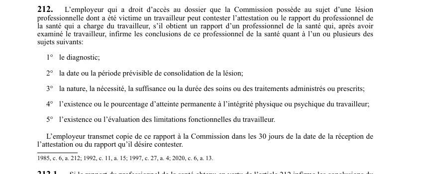

art-212-LATMP : contestation employeur des conclusions médicales
Un article du wiki ⚖️ Recueil législatif
En bref
L'employeur qui a accès au dossier peut s'attaquer à l'attestation ou au rapport du professionnel de la santé qui a charge du travailleur, mais seulement en produisant un avis médical contraire fondé sur un examen réel du travailleur, et en respectant un délai strict de transmission.
- Qui peut contester : l'employeur qui a droit d'accès au dossier que la Commission possède au sujet de la lésion professionnelle.
- Preuve exigée : un rapport d'un professionnel de la santé qui, après avoir examiné le travailleur, infirme les conclusions du professionnel qui en a charge ; un simple désaccord sur dossier ne suffit pas.
- Cinq sujets contestables, et eux seuls : 1° le diagnostic ; 2° la date ou la période prévisible de consolidation ; 3° la nature, la nécessité, la suffisance ou la durée des soins ou traitements ; 4° l'existence ou le pourcentage d'atteinte permanente à l'intégrité physique ou psychique ; 5° l'existence ou l'évaluation des limitations fonctionnelles.
- Délai de 30 jours : l'employeur transmet copie du rapport à la Commission dans les 30 jours de la réception de l'attestation ou du rapport qu'il veut contester.
- Suite du processus : ce rapport enclenche la procédure d'évaluation médicale prévue à l'article 212.1.
🌐 LegisQuébec · 📄 PDF officiel (page 56)
Texte officiel : capture du PDF
{kind=link}

Toucher l'image pour l'agrandir🔗 Ouvrir a cette page : LATMP.pdf : page 56 · texte a jour au 20 février 2024
Voir aussi
- 🔢 Sous-article : art. 212.1 · procédure : contestation médicale.
- 🔧 Modifié par : LMRSST art. 63 · remplace art.
- ↑ Loi : LATMP
Pages qui pointent ici (14)
- art-205.1-LATMP : rapport complémentaire, délai 30 jours Recueil législatif
- art-206-LATMP : renvoi du rapport au BEM Recueil législatif
- art-209-LATMP : examen par le médecin de l'employeur Recueil législatif
- art-224-LATMP : Commission liée par le médecin qui a charge Recueil législatif
- art-224.1-LATMP : effet liant de l'avis du BEM Recueil législatif
- art-63-LMRSST : modifie l'art. 212 LATMP Recueil législatif
- BEM Recueil législatif
- Convoqué au BEM, un médecin que tu n'as pas choisi Droit du travail
- Démarche en cas de lésion Droit du travail
- Évaluation médicale et BEM Droit du travail
- LATMP Recueil législatif
- LATMP : Chapitre VII : Aspects médicaux (MQAC, BEM) Recueil législatif
- LMRSST : Chapitre I : Modifications à la LATMP Recueil législatif
- Organismes du régime SST Droit du travail